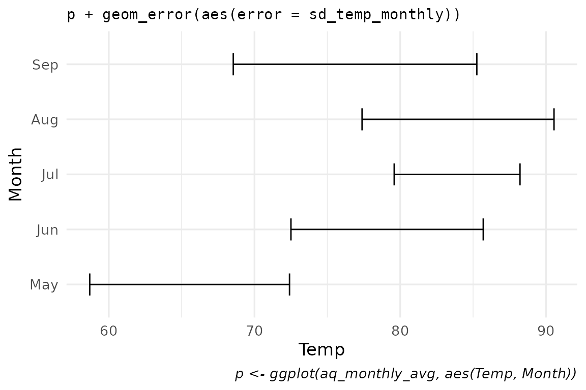
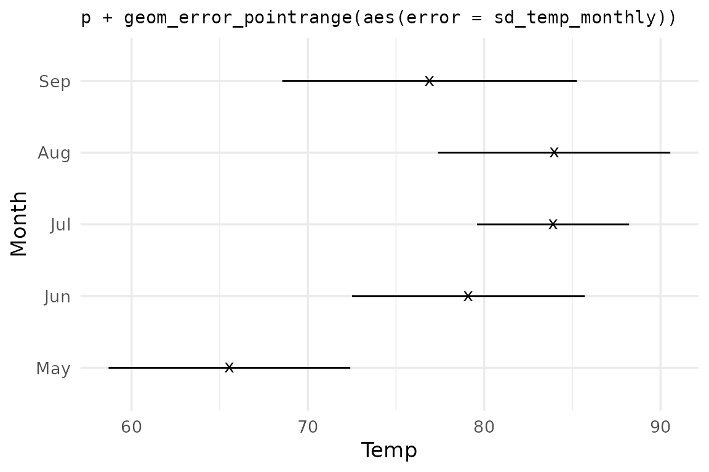
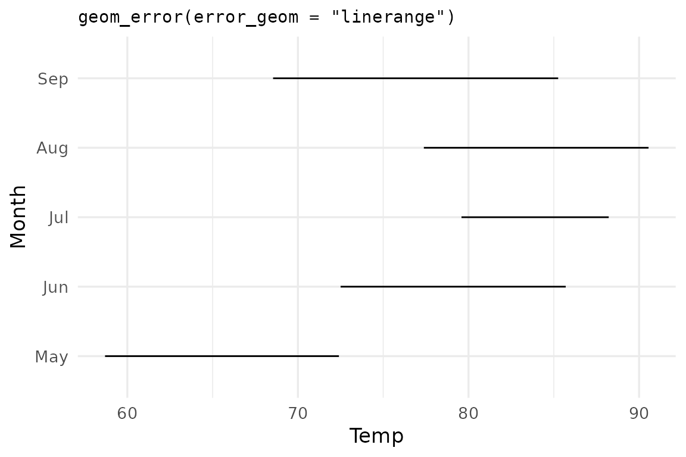
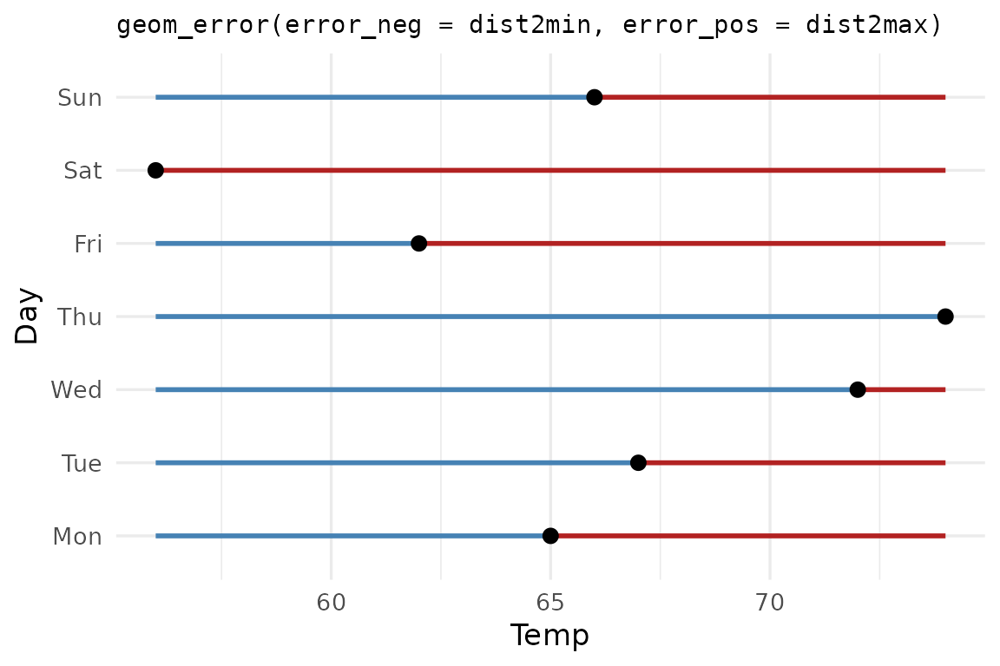
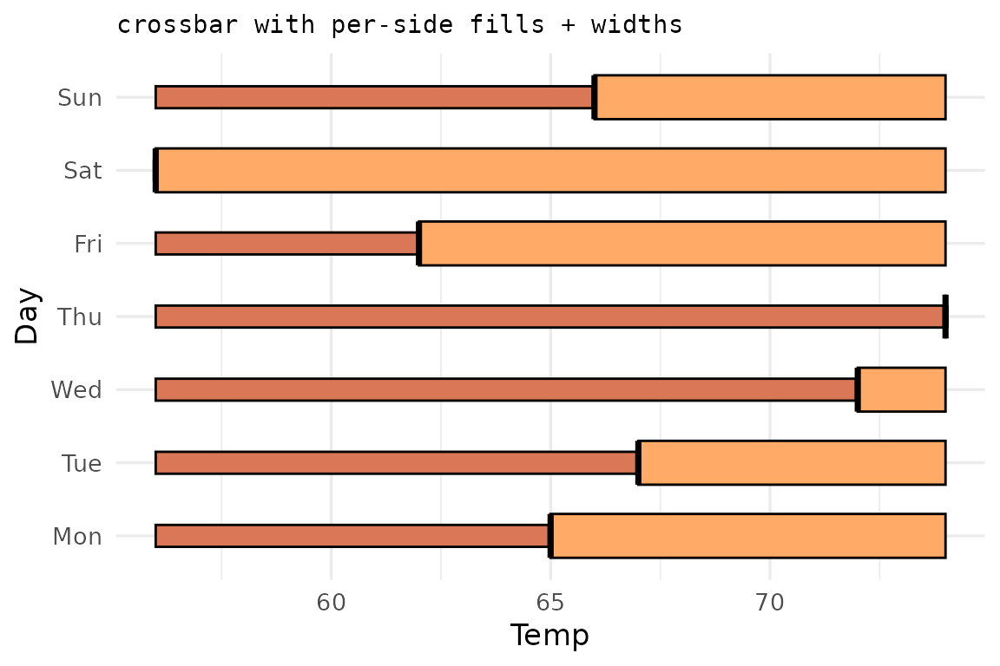
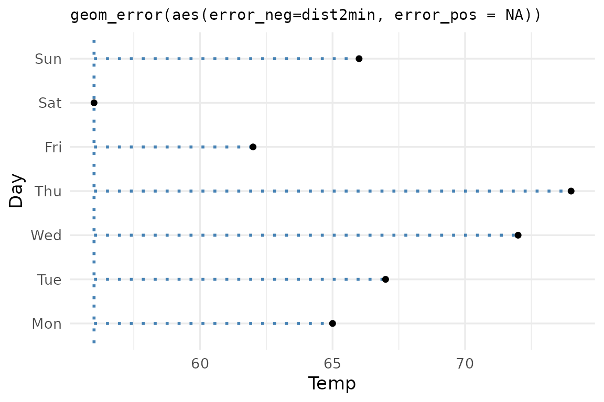

This vignette demonstrates the geom API on symmetric, asymmetric, and
one-sided errors. For the package motivation see the README; for
stat_error() summaries and sign_aware errors
see vignette("use-cases").
Setup
We use airquality — Daily air quality measurements in
New York, May to September 1973.
This dataset has 153 rows and 6 columns: four continuous measurements, plus Month and Day.
data("airquality"); airq <- airquality
# It wouldn't be an R workflow without minimal data cleaning...
day_in_month <- function(day_in_month, month, year) {
days_abbr <- format(as.Date(sprintf("%d-%02d-%02d", year, month, day_in_month)), "%a")
factor(days_abbr, levels = c("Mon","Tue","Wed","Thu","Fri","Sat","Sun"), ordered = TRUE)
}
airq$Day <- day_in_month(airq$Day, airq$Month, 1973)
airq$Month <- factor(airq$Month, labels = month.abb[5:9])
# summary table, grouped by month with Temp's means and standard deviation
aq_monthly_avg <- data.frame(
Month = unique(airq$Month),
Temp = tapply(airq$Temp, airq$Month, mean),
sd_temp_monthly = tapply(airq$Temp, airq$Month, sd)
)
p <- ggplot(aq_monthly_avg, aes(Temp, Month))Simple and defaults
A single error aesthetic is enough —
ggerror infers orientation from the data (here: numeric x
axis, discrete y axis) and picks geom_errorbar as the
default base geom.
p +
geom_error(aes(error = sd_temp_monthly),
width = 0.4) +
labs(title = "p + geom_error(aes(error = sd_temp_monthly))",
caption = "p <- ggplot(aq_monthly_avg, aes(Temp, Month))"
)
Same data, pinned geom_error_pointrange() wrapper:
p +
geom_error_pointrange(aes(error = sd_temp_monthly),
size = 0.8,
shape = "x") +
labs(title = "p + geom_error_pointrange(aes(error = sd_temp_monthly))")
Same data, swapped via the error_geom argument:
p +
geom_error(aes(error = sd_temp_monthly),
error_geom = "linerange") +
labs(title = "geom_error(error_geom = \"linerange\")")
💡 Tip: Because error_geom is just an
argument, you can iterate over it functionally:
purrr::map(c("errorbar", "linerange", "crossbar", "pointrange"),
~ p + geom_error(aes(error = sd_temp_monthly), error_geom = .x))Asymmetric errors
error_neg and error_pos extend in opposite
directions regardless of orientation. They’re useful when the dispersion
measure on each side carries different meaning.
may_week <- subset(airq[1:7,], Month == 'May')
may_summary <- data.frame(
Day = may_week$Day,
Temp = may_week$Temp,
dist2min = may_week$Temp - min(may_week$Temp, na.rm = TRUE),
dist2max = max(may_week$Temp, na.rm = TRUE) - may_week$Temp
) # Each Temp point now has its distance from the minimum Temp in the
# dataset, and its distance from the maximum Temp in the dataset.:::
ggplot(may_summary, aes(x = Temp, y = Day)) +
geom_error(aes(error_neg = dist2min,
error_pos = dist2max),
error_geom = "pointrange",
color_neg = "steelblue",
color_pos = "firebrick",
linewidth = 1
) +
labs(title = "geom_error(error_neg = dist2min, error_pos = dist2max)")
Deciding what counts as the negative or the positive error is up to your discretion.
Per-side styling extends to color, fill,
linewidth, linetype, alpha, and
width. Pass either the side-specific form
(color_neg, width_pos) or the shared form
(color, width).
ggplot(may_summary, aes(Temp, Day)) +
geom_error(aes(error_neg = dist2min,
error_pos = dist2max),
error_geom = "crossbar",
fill_neg = "#d97757", fill_pos = "#ffaa66",
width_neg = 0.3, width_pos = 0.6) +
labs(title = "crossbar with per-side fills + widths")
One-sided bars
Sometimes we care mostly about errors towards one side, and dismiss
the other as uninteresting. For example, how each observation falls
below a threshold. Set the unused side to NA and
ggerror suppresses the cap and stem on that side
automatically.
ggplot(may_summary, aes(Temp, Day)) +
geom_error(aes(error_neg = dist2min, error_pos = NA),
color = "steelblue",
linewidth = 1,
linetype = 9) +
geom_point(size = 1.5) +
labs(title = "geom_error(aes(error_neg=dist2min, error_pos = NA))")
Remember: The errors are simply a magnitude. They don’t even have to be treated as errors, like in the last couple of examples, where they are treated as distances from some arbitrary value (in this one-sided example: the distance of each temperature from the minimum temperature that was measured).
Passing
0instead ofNAworks, but is discouraged, for several reasons: 1.NAis more explicit than0. 2. Since0is treated as a value, it won’t automatically cap out the undesired side of the error bars, for example.
See vignette("use-cases") for more advanced
options.
Extending ggerror
If you know of, or need, a new error geom, please open an issue on
the GitHub
repository. My first motivation was to simplify the heck out of the
error geoms, reducing the aesthetics to a single error
aesthetic. The rest (asymmetric, one-sided, etc) are just niceties that
I added along the way.